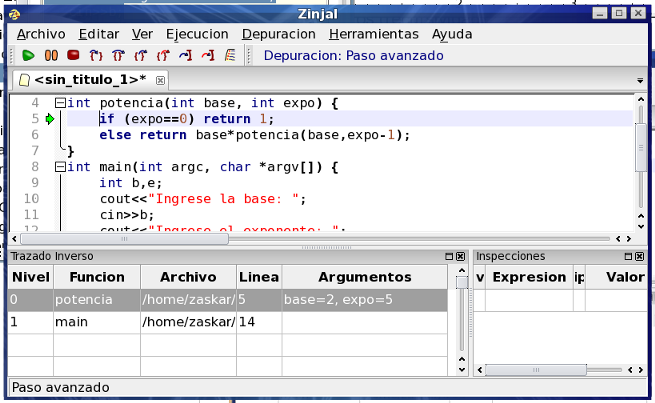

La linea que corresponde ejecutar a continuación contiene la llamada a la función potencia, por lo que en realidad, la próxima linea de código a ejecutar debería ser la primer línea de la función potencia (primero hay que evaluarla para luego poder mostrar el resultado). En estos casos, tenemos dos formas de continuar la ejecución: step over y step in.
- La primera (step over, con la tecla F7) es la que utilizamos hasta ahora, avanza a la siguiente linea dentro del ámbito actual. En este caso, avanzará a la siguiente linea del main, realizando la evaluación de la función y mostrando el resultado en un solo paso.
- La segunda forma de avanzar (step in, con F6), nos permite meternos dentro de la función. Es decir, si presionamos F6 el depurador avanzará hasta la primer línea de la función potencia, y nos permitirá analizar qué ocurre dentro de la misma.
Presione F6 y observe el contenido del panel de trazado inverso (abajo a la derecha, backtrace en Inglés). En este panel tenemos en la primer linea la función actual y el punto donde realmente estamos detenidos en la ejecución, y en las otras lineas podemos observar cómo se llegó a este punto, y qué otras funciones estan "esperando" a que se resuelva esta llamada para poder continuar. En este caso, la primer línea indicará la función potencia y la segunda la función main.

Volver... Continuar...